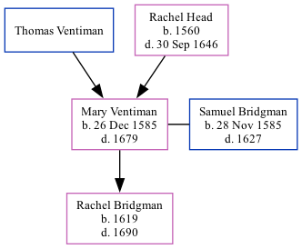

The daughter of Thomas Ventiman and Rachel Head, Mary Ventiman, the 9 times great-grandmother of Nigel Horne, was born in Waltham, Kent, England on Dec 26, 1585 and married Samuel Bridgman (with whom she had 1 child, Rachel) in Petham, Kent, England on Nov 4, 16151, which is also where she died in 1679.
Public Member Trees Online publication - Provo, UT, USA: The Generations Network, Inc., 2006.Original data - Family trees submitted by Ancestry members.Original data: Family trees submitted by Ancestry members.
Family Tree

Map
Generated by Ged2Site. Last updated on Jul 20, 2025